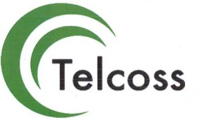

Trade Mark Journal No.2026/006 6 February 2026
UK00004315419 18 December 2025 (37,39,40,42)

- Class 37
- Services for the construction of buildings; Maintenance and repair of buildings; application of coatings and sealers; Cleaning services; Domestic cleaning services; cleaning of external surfaces of buildings and structures; Building cleaning services; Industrial cleaning service; Industrial cleaning of buildings; Cleaning of industrial premises; maintenance services for industrial plants and machinery; Cleaning and maintenance of storage tanks and containment vessels; Land drainage; Drainage (Land -); Drainage services; Sewer pipe maintenance; Cleaning of drains; Sewer pipe cleaning; Unblocking of drains; Septic tank pumping and cleaning; Cleaning via industrial rope access; Scaffolding construction; Erection of formwork for building and construction; Erection of scaffolding for building and construction; Servicing of nuclear plant; Cleaning of nuclear plant; Repair or maintenance of nuclear power plants; Cleaning via industrial rope access; Application of coatings and sealers; Construction project management services; Installation of instrumentation systems; Installation of solar powered systems; Repair and maintenance of electronic and electro-technical apparatus; Construction management services; Electrical wiring services; Installation of electrical and generating machinery; Cleaning of electrical motors; Consultancy, advisory and information services relating to all the aforesaid services.
- Class 39
- Waste treatment; Waste disposal [treatment of waste]; Incineration of waste and trash; Waste and trash (incineration of -); Waste processing; Waste incineration; Incineration of Waste; Waste destruction; Destruction of waste; Hazardous waste management; Waste recycling services; Upcycling [waste recycling]; Treatment of waste; Incineration of waste; Recycling of waste; Treatment [recycling] of waste; Treatment [recycling] of radioactive waste; Treatment of industrial waste; Recycling and waste treatment; Treatment of toxic waste; Industrial toxic waste disposal; Waste management services [recycling]; Treatment of hazardous waste; Treatment of hazardous liquids, gases and materials; Treatment of toxic waste and substances; Recycling of waste products; Recycling of waste materials; Hazardous waste treatment services; Treatment of waste materials; Treatment [reclamation] of industrial waste; Chemical recycling of waste products; Chemical treatment of waste products; Detoxification of hazardous materials; recycling of industrial and commercial goods; Consultancy relating to the incineration of waste and trash; Consultancy relating to the recycling of waste and trash; Treatment of toxic waste; Nuclear waste treatment; Decontamination of nuclear waste; Treatment [reclamation] of material from waste; Treatment of chemical waste; Processing of waste oil; Sorting of waste and recyclable material [transformation]; Abrasive blasting services; Application of coatings by chemical; Sewage treatment services; Waste removal services; Waste removal; information and advisory services relating to all the aforementioned services.
- Class 40
- Scientific and technological services, namely, scientific research and analysis in the field of waste removal and disposal; Industrial analysis and research services; Engineering services; Quality control testing services for industrial machinery; Environmental consultancy services; Engineering consultancy services.
- Class 42
- Collection, transportation, removal and storage of wastes, hazardous wastes, residual materials and sewerage; Clearance of wastes; Dumping of wastes; Facilities management relating to wastes; Handling of waste products, suppliers and containers for the disposal of waste materials; Sewage transportation; Waste collection and recovery; Industrial removal services; Services for transportation; Transportation services; Consultancy, advisory and information services relating to all the aforesaid services.
Telcoss Limited
Representative: Hay & Kilner LLP